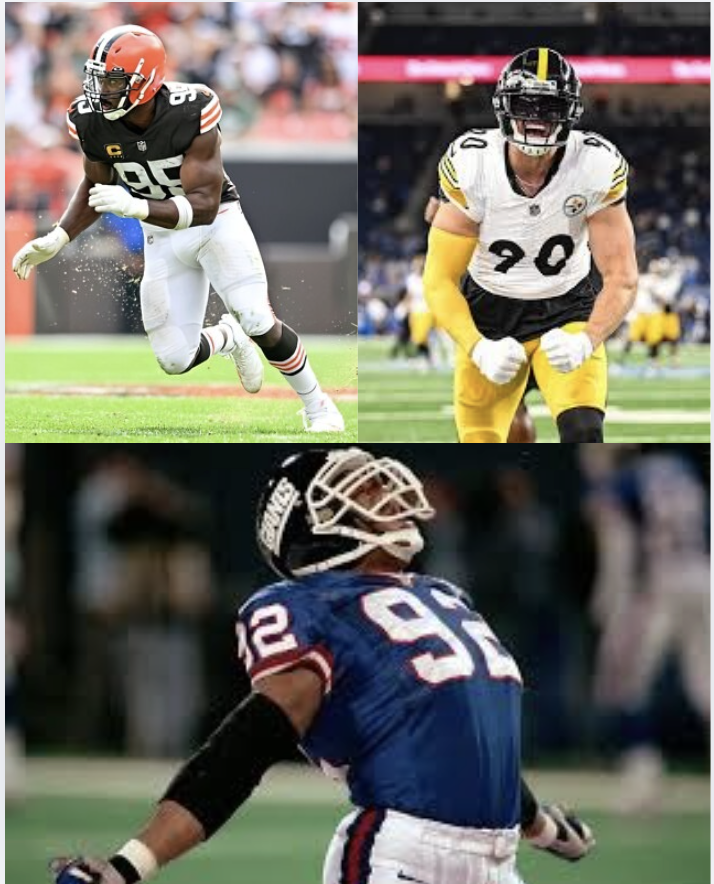

Analyzing the
Top 3 Best Single-Sack Seasons
I collected data from ESPN, thefootballdatabase.com, and Next Gen Stats regarding the best statistical sack seasons in NFL history. The data is from Myles Garrett's 2025 season, Michael Strahan's 2001 season, and T.J. Watt's 2021 season. I calculated their sack rates for each indivual game they played that year and compared it with Season Average Time to Throw, Opponent's Offensive Ranking with respect to PPG, and their Opponent's Sack Rate Allowed. I produced three visualizations that provide insight on these players and their performance during the specific year and gives capability to make comparisons among them.
